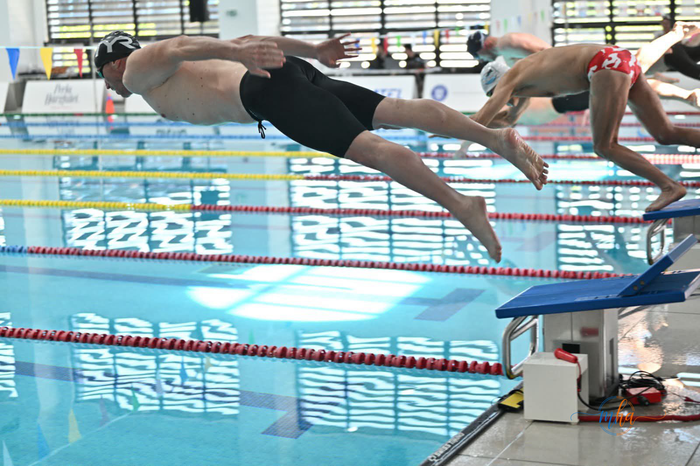
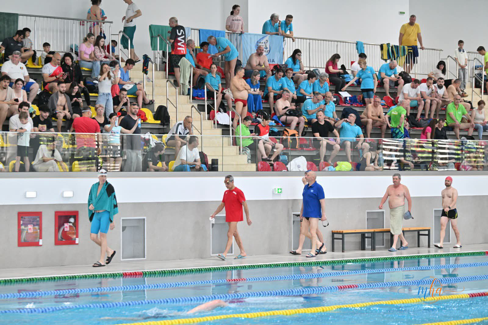
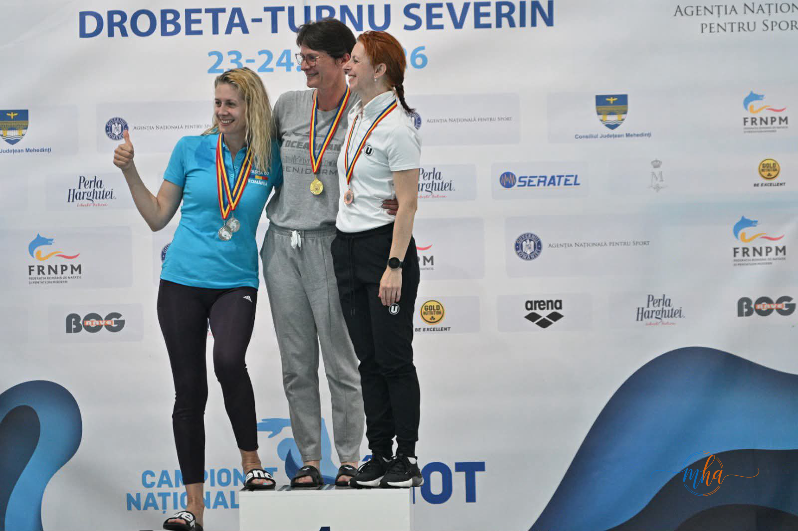
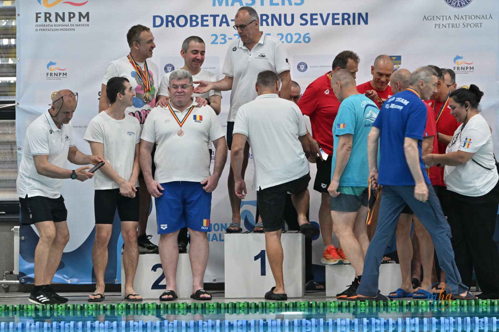
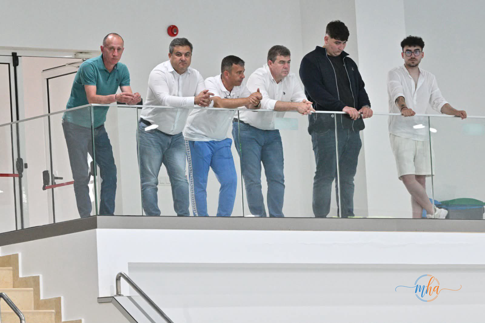

În weekendul 23-25 mai 2026, municipiul Drobeta-Turnu Severin a găzduit una dintre cele mai importante competiții de natație ale anului la nivel național: Campionatul Național de Înot Masters, organizat de Federația Română de Natație și Pentatlon Modern (FRNPM) la Bazinul de Înot Drobeta. Evenimentul a reunit aproximativ 170 de sportivi din întreaga țară, transformând Severinul pentru trei zile în capitala înotului Masters din România.
Pasiunea pentru înot nu cunoaște vârstă
Competiția Masters este prin definiție o sărbătoare a sportului practicat cu pasiune de-a lungul întregii vieți. Participanții provin din diferite categorii de vârstă — de la cei mai tineri Masters până la veteranii care demonstrează că dedicarea și antrenamentul susținut aduc rezultate remarcabile la orice vârstă. Sportivii prezenți la Drobeta-Turnu Severin au oferit probe spectaculoase, demonstrând că performanța sportivă poate coexista cu activitatea profesională și cu responsabilitățile cotidiene.


Podium și medalii la Bazinul Drobeta
Ceremoniile de premiere au adus momente de emoție autentică pe marginea bazinului. Sportivii care au urcat pe podium au primit medaliile cu bucurie și mândrie — semn că victoria în sport nu are termen de expirare. Fiecare medalie câștigată la Drobeta-Turnu Severin reprezintă ani de antrenament, sacrificiu și dragoste pentru înot.


Drobeta-Turnu Severin — gazdă a competițiilor naționale de înot
Campionatul Național Masters reprezintă a doua competiție națională de înot organizată în municipiu în decurs de două weekenduri consecutive, după concursul de înot pentru copii desfășurat în aceeași locație weekendul anterior. Această succesiune de evenimente sportive de nivel național confirmă faptul că Bazinul de Înot Drobeta dispune de infrastructura și condițiile necesare pentru a găzdui competiții de anvergură.

Reprezentanți ai autorităților județene și locale, prezenți la competiție
La eveniment au fost prezenți și reprezentanți ai autorităților județene, care au evidențiat importanța susținerii sportului și a promovării unui stil de viață sănătos prin organizarea unor astfel de competiții. Campionatele naționale găzduite la Drobeta-Turnu Severin contribuie atât la dezvoltarea fenomenului sportiv, cât și la promovarea județului Mehedinți pe plan național.
Campionatul Național de Înot Masters a adus la Drobeta-Turnu Severin sportivi, antrenori și susținători din mai multe zone ale țării, transformând bazinul de înot într-un adevărat centru al performanței și al fair-play-ului sportiv.
Bazinul de Înot Drobeta — infrastructură modernă la standarde naționale
Inaugurarea Bazinului de Înot Drobeta a adus județului Mehedinți o infrastructură sportivă modernă, capabilă să susțină competiții la cel mai înalt nivel. Organizarea succesivă a unor evenimente naționale în această sală demonstrează că investiția în infrastructura sportivă aduce beneficii concrete pentru comunitate — atât prin promovarea practicării sportului de masă, cât și prin atragerea de competiții naționale care pun Mehedințiul pe harta sportului românesc.